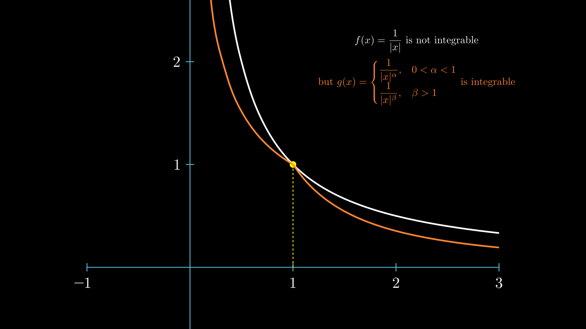

Sobolev 不等式 \(\mathbf{I}\)
查看 Lawrence C.Evans Partial differential equations 5.6,
以及 Functional Analysis, Sobolev Spaces and Partial Differential Equations 9.3，
Brezis 书中的内容比较丰富，全面。
我们在这一部分的目标是发现各种Sobolev空间到其他空间的嵌入。
这里的关键分析工具将是某些所谓的 Sobolev 型不等式，我们将在下面对 光滑函数 进行证明。
这将建立任意函数在各种相关 Sobolev 空间中的估计。
因为正如我们在 逼近 中所看到的，光滑函数 是稠密的。
问题
为了清楚的表达，我们首先只考虑 Sobolev 空间 \(W^{1, P} ( \Omega )\)，
并提出如下基本问题：
如果一个函数 \(u\) 属于 \(W^{1, P} ( \Omega )\)，那么 \(\Omega\) 是否自动属于某个其他空间?（我们称之为 嵌入 embedded ）
我们在这里应当做出提醒，这些对 \(W^{1,p}(\Omega)\) 建立的不等式，根据 \(\Omega = \mathbb{R}^n\) 还是有界开集的不同而有很大差别。
n=1
在对一般的 \(\mathbb{R}^n\) 分析前，我们不妨先研究一下 \(n=1\) 的情况。
参考 Brezis - Functional Analysis, Sobolev Spaces and Partial Differential Equations 8.2 The Soblev Space \(W^{1, p}(I)\) Theorem 8.2
\(u\) 貌似跟 \(\int_0^x Du\) 差不多。其实我们有如下定理
Theorem
对于某个 \(1\le p \le \infty\)，若 \(u\in W^{1, p}(\Omega)\)， \(\Omega \subseteq R\) 是某个开区间，
则存在 点 \(x_0 \in \Omega\) 和常数 \(c\) 满足，使得
\[ u(x) = c + \int_{x_0}^x Du, \text{ a.e.} \quad x\in \Omega \]
1 . 这也意味着， \(u\) 和一个连续函数几乎处处相等，而 \(u\in W^{1, p}(\Omega)\)，那么个连续函数也属于 \(W^{1, p}(\Omega)\)。我们称这是 \(u\) 的一个连续版本，并且以后我们将不再区分这两个函数。
2 . \(u(x)\) 几乎处处可导，且 \(u' = Du \text{ a.e.}\)。
证明
由于 \(v \in L^p(\Omega)\)，那么 \(v \in L_{\text{loc}}^1(\Omega)\)。
我们令
\[ v(x) = \int_{x_0}^x Du \]
则 \(v(x) \le \int_\Omega |Du|\)，一致有界，故 \(v\in L_{\text{loc}}^1(\Omega)\)。
1.
下面我们证明，对于一个有界区间 \(W \subset \Omega\)， \(v\) 在 \(W\) 上是 绝对连续函数 。
周民强 实变函数论 5.4 绝对函数与微积分基本定理 定理 5.10 ）
这是因为可积函数可被光滑函数逼近，即 \(C_c^\infty(\Omega)\) 在 \(C^p(\Omega), 1\le p < \infty\) 中稠密。
（参考 Folland Real Analysis Proposition 8.17
Lawrence C.Evans Partial differential equations Appendix C.5）
对于 \(\forall \epsilon > 0\)，存在连续函数 \(g \in C_c^\infty(W)\)，使得 \(\int_W |u(x) - g(x)| dx < \epsilon/2\)。
而对于 \(Dg\) 他在紧集上连续，那么他有界，\(g\) 是 Lipschitz 连续的，\( |g(x)-g(y)| \leq L(|x-y|)\)。
因此， 若 \(0<\delta < \dfrac{\epsilon}{2L}, \)，
那么对于任意有限个互不相交的开区间 \((x_i, y_i) \subset W, i=1,2,\cdots,n\) 满足 \(\sum_{i=1}^n (y_i-x_i)<\delta\) 时，有
\[ \begin{align}
\sum_{i=1}^n |v(y_i)-v(x_i)|
& \leq \sum_{i=1}^n |v(y_i)-v(x_i) - g(y_i)+g(x_i)| + \sum_{i=1}^n |g(y_i)-g(x_i)| \\
& \leq \int_W |v-g| + \sum_{i=1}^n L|y_i-x_i| \\
& \leq \frac{\epsilon}{2} + L \delta \\
& \leq \frac{\epsilon}{2} + L \frac{\epsilon}{2L} = \epsilon \\
\end{align}. \]
故 \(v\) 在 \(\Omega\) 的任意有界子集上绝对连续。
那么他 几乎处处可导 。（ 周民强 实变函数论 5.4 绝对函数与微积分基本定理 推论 5.12 ）
那么 \(v' = Du \text{ a.e.}\) （ 周民强 实变函数论 5.3 不定积分的微分 定理 5.7 ）
2.
Brezis - Functional Analysis, Sobolev Spaces and Partial Differential Equations 8.2 The Soblev Space \(W^{1, p}(I)\) Lemma 8.2
我们证明 \(D(u-v) = 0 \text{ a.e.}\)。
我们这里扩大了 \(\phi\) 的选择空间。
对任意的 \(\phi \in C_c^1(\Omega)\)，
\[ \begin{align}
\int_\Omega v \phi'
&= \int_\Omega \phi' \int_{x_0}^x Du \\
\end{align} \]
那么由 可积函数的 分部积分定理
Lemma
证明参考 周民强 实变函数论 5.5 分部积分与积分中值定理 定理 5.15
若 \(f(x), g(x)\) 皆为 \([a,b]\) 上的可积函数，\(\alpha, \beta \in R\)，令
\[ F(x) = \alpha + \int_a^x f(t)dt, \quad G(x) = \beta + \int_a^x g(t)dt \]
则
\[ \int_a^b G(x)f(x)dx + \int_a^b g(x)F(x)dx = F(b)G(b) - F(a)G(a) \]
\(\phi', Du\) 可积，则
\[ \begin{align}
\int_\Omega v \phi'
= \int_\Omega \phi' \int_{x_0}^x Du
= v \phi \Big|_{\partial \Omega} - \int_\Omega \phi Du
= - \int_\Omega \phi Du
\end{align} \]
因此 \(Du\) 是 \(v\) 的弱导数，那么由于弱导数线性原理 \(D(u-v) = 0 \text{ a.e. }\)
所以 \(v, u-v \in W_{\text{loc}}^{1,p}(\Omega)\)
3.
由于 \(u-v \in W_{\text{loc}}^{1,p}(\Omega)\)，
而 \(D(u-v) = 0 \text{ a.e. }\)，我们希望 \(u = c \text{ a.e. }\)
这里可以使用 局部逼近定理 的 Corollary，但这里给出一个一维的证明。
参考 Hunter Hunter Notes on PDE Proposition 3.6
Brezis - Functional Analysis, Sobolev Spaces and Partial Differential Equations 8.2 The Soblev Space \(W^{1, p}(I)\) Lemma 8.1
Lemma
设 \(f \in L_{\text{loc}}^1(\Omega)\) ， \(\Omega \subset R\) 是一个区间 ，满足
\[ \int_\Omega f \phi' dx = 0 \; \forall \phi \in C_c^1(\Omega) \]
那么存在常数 \(c\) 使得 \(f = c \text{ a.e. }, x \in \Omega \)
固定 \(\eta \in C_c(\Omega), \int_{\Omega} \eta = 1\)。
对于任何函数 \(\phi \in C_c(\Omega)\)，令
\[ h(x) = \phi(x) - (\int_\Omega \phi )\eta(x) \]
那么
\[ \int_\Omega h = \int_\Omega \phi - (\int_\Omega \phi )\int \eta(x) = 0 \]
因此对 \(h\) 进行积分
\[ H(x) = \int_{-\infty}^x h(t) \]
那么 \(H(x)\in C_c^1(\Omega) \)
根据题目条件，我们有
\[ \begin{align}
0 &= \int_\Omega f H' = \int_\Omega f(x) \left[ \phi(x) - (\int_\Omega \phi )\eta(x) \right] \\
&= \int_\Omega f \phi - (\int_\Omega f \eta) (\int_\Omega \phi) \\
&= \int_\Omega \left[f - (\int_\Omega f \eta)\right] \phi \\
\end{align} \]
那么由 内积任何测试函数 0，则几乎处处为零 可知
\[ f - (\int_\Omega f \eta) = 0 \text{ a.e. } \]
那么，由 2 以及 [光滑函数一致逼近连续函数] ，对于任何 \(\phi\in C_c^1(\Omega)\)，
\[ \int_\Omega (u-v) \phi' = - \int \phi Du + \int \phi Dv = \int \phi (Du - Dv) = 0 \]
那么存在 \(c\) 使得 \(u-v = c \text{ a.e. }\) ， 即
\[ u(x) = c + \int_{x_0}^x Du \text{ a.e. } \]
其中 \( v(x)=c+\int_{x_0}^x Du = c+\int_{x_0}^x v' \text{ a.e. } \)，
\(v' = Du \text{ a.e. }, v = u \text{ a.e. } \)，
故 \(v \in W^{1,p}(\Omega)\)。
此后不再区分 \(u, v\)，默认 \(u\) 是连续版本。
Proposition
对于 \( 1 < p <\infty\)，
\[ \begin{align}
|u(x)-u(y)| \le \int_x^y 1 \cdot | Du | \le (\int_x^y 1^{\frac{p}{p-1}})^{\frac{p-1}{p}} (\int_x^y |Du|^p)^{\frac{1}{p}} = |x-y|^{1-\frac{1}{p}} \|Du\|_{L^p(\Omega)}
\end{align} \]
直观理解
对于一般的 \(\mathbb{R}^n, n\ge 1\)，
对于建立不等式的动机，两本书中都提到了用伸缩变换发现的参数，但这里我们给出另一种直观上的理解。
View
对于某个函数的可积性，我们常常通过将其与函数
\[ u(x) = \frac{1}{|x|} \]
进行比较来获得，

如果对于某个这样的 \(g\) 和常数 \(C\)，有 \(h=Cg\)，我们记他满足 \(h \prec \dfrac{1}{|x|}\)
我们用类似 \(h\) 这样的“测试函数”，来对 \(u \in W^{1, p} (\mathbb{R}^n)\) 如何被 \(Du\) 控制进行粗略的把握。
如果 \(h \in W^{1,p}(\mathbb{R}^n)\)，那么
\[ \begin{gather}
\int |Dh|^p = n\alpha(n)\int_0^\infty |Dh(r)|^p r^{n-1} dr \\
\int |h|^p = n\alpha(n)\int_0^\infty |h(r)|^p r^{n-1} dr
\end{gather} \]
其中， \(\alpha(n)\) 代表 \(n\) 维单位球的体积，而 \(n\alpha(n)\) 等于 \(n\) 维单位球的表面积。
为了满足可积性，可以有
\[ \begin{gather}
|Dh(r)|^pr^{n-1} \prec \dfrac{1}{|r|} \\
|h(r)|^pr^{n-1} \prec \dfrac{1}{|r|}
\end{gather} \]
那么有
\[ \begin{gather}
Dh(r) \prec \dfrac{1}{|r|^{n/p}} \\
h(r) \prec \dfrac{1}{|r|^{n/p}}
\end{gather} \]
那么积分回去有
case1
对于 \(1 \le p < n\)
\[ h(r) \prec \begin{cases}
\dfrac{1}{|r|^{n/p-1}}, & \text{if } r \in (0, 1), \\
\dfrac{1}{|r|^{n/p}}, & \text{if } r \ge 1.
\end{cases} \]
现在我们观察 \(\int |h|^q\)，有
\[ \int |h|^q = n\alpha(n)\int_0^\infty |h|^q r^{n-1} dr \]
如果 \(q(\frac{n}{p}-1)\le n, \quad \text{and} \quad q\frac{n}{p} \ge n\)，即
\[ \frac{1}{p} - \frac{1}{n} \le \frac{1}{q} \le \frac{1}{p}\]
那么 \(|h(r)|^q r^{n-1} \prec \dfrac{1}{|r|} \)，\(\int |u|^q\) 就可积了。
case2
对于 \(p = n\)，
\[ h(r) \prec \begin{cases}
-\log |r| + C, & \text{if } r \in (0, 1), \\
\dfrac{1}{|r|}, & \text{if } r \ge 1.
\end{cases} \]
继续观察 \(\int |h|^q= n\alpha(n)\int_0^\infty |h|^q r^{n-1} dr\)，
如果 \(q \ge n\)，\(|h|^q r^{n-1} \prec \dfrac{1}{|r|} \)，\( \int |h|^q\) 可积，
（ 若 \(q< n\) 则大于 1 的部分无法被控制 ）
能否找一个函数 \(u\) 在 \(r \le 1\) 时， \(Du\) 可积，但\(u \to \infty\) ？
case3
对于 \(p > n\)，
\[ h(r) \prec \begin{cases}
-|r|^{1-n/p}+C & \text{if } r \in (0, 1), \\
\dfrac{1}{|r|^{n/p}}, & \text{if } r \ge 1.
\end{cases} \]
我们发现，\(h(r)\) 不仅 有界，而且有 Holder 连续性
\[ |h(x) - h(y)| \prec |x-y|^{1-n/p} \]
因为最极端的情况也只是在 \(r\to 0\) 处。
至此，我们对 \(h\) 的可积性有了直观的把握，而对于任意的 \(u \in W^{1, p} (\mathbb{R}^n)\)
他几乎处处和 \(h\) 差不多。
（甚至沿着 case3 的思想我们可以获得 Morrey 不等式证明的直观理解。）
我们必然将问题分成三种情况来讨论：
\[ \begin{align}
& 1 \le p < n, \\
& p = n, \\
& n < p \le \infty.
\end{align} \]
Gagliardo-Nirenberg-Sobolev 不等式
对于第一种情况，我们先对 \(u\in C_c^\infty(\mathbb{R}^n)\) 进行研究。
若 \(1\le p \le n\)， 我们能否找到特定的 \( (C, q) \) ，使得对于任意的 \(u\in C_c^\infty(\mathbb{R}^n)\) 可以建立这样的一个估计？
\[ \|u\|_{L^q(\mathbb{R}^n)} \le C \|Du\|_{L^{p}(\mathbb{R}^n)} \]
定义： 如果 \(1\le p < n\)，那么 \(p\) 的 Sobolev 共轭为
\[ p^* = \frac{np}{n-p} \]
Tip
1 .
\[ \frac{1}{p^*} = \frac{1}{p} - \frac{1}{n}, \quad p^* > p \]
若不等式成立，那么对 \(u\) 进行伸缩变换，再对不等号两边进行齐次性分析，能得出只有当 \(q = p^*\) ，不等式才有意义。
查看教材。
2 .
我们确实需要 \(u\) 具有紧支集，否则 \(u\) 随意上下移动但 \(Du\) 不变，对于范数的估计就不存在了。
Theorem
Gagliardcr-Nirenberg-Sobolev inequality
设 \(1\le p < n\)，则存在只跟 \(p, n\) 有关的常数 \(C\)，使得对于任意的 \(u\in C_c^1(\mathbb{R}^n)\)，有
\[ \|u\|_{L^{p^*}(\mathbb{R}^n)} \le C \|Du\|_{L^{p}(\mathbb{R}^n)} \]
证明:
Functional Analysis, Sobolev Spaces and Partial Differential Equations 9.3 Theorem 9.9
1.
首先考虑 \(p=1\) 的情况，因为 \(u\) 具有紧支集， 对于每个 \(i=1, \cdots, n\) 和 \(x\in \mathbb{R}^n\)，我们有
\[ u(x) = \int_{-\infty}^{x^i} D_i u(x_1, \cdots, x_{i-1}, \xi_i, x_{i+1}, \cdots, x_n) d\xi_i \]
那么就有
\[ |u| \le \int_{-\infty}^{+\infty} |D_i u(x_1, \cdots, x_{i-1}, \xi_i, x_{i+1}, \cdots, x_n)| d\xi_i \]
我们意识到上式右侧的结果与 \(x_i\) 的取值无关。
下面考虑
\[ |u|^{\frac{n}{n-1}} \le \prod_{i=1}^n \left(\int_{-\infty}^{+\infty} |D_i u(x_1, \cdots, x_{i-1}, \xi_i, x_{i+1}, \cdots, x_n)| d\xi_i \right)^{\frac{1}{n-1}} \]
我们想要估计 \(\int_{\mathbb{R}^n}|u|^{\frac{n}{n-1}}\)，那么这里我们就介绍一个重要的不等式
Lemma
对于 \(f_i \in L^{n-1}(R^{n-1}), i=1, \cdots, n\)，设
\[ \widetilde{x_i} = (x_1, \cdots, x_{i-1}, x_{i+1}, \cdots, x_n) \in R^{n-1} \]
令
\[ f(x) := \prod_{i=1}^n f_i( \widetilde{x_i}) \]
那么有
\[ \int_{\mathbb{R}^n} |f(x)| dx = \int_{\mathbb{R}^n} \prod_{i=1}^n |f_i(\widetilde{x_i})| dx = \int_{-\infty}^{+\infty} \cdots \int_{-\infty}^{+\infty} |f_1(\widetilde{x_1})| \cdots |f_n(\widetilde{x_n})| dx_1 \cdots dx_n \]
注意到 \(f_1(\widetilde{x_1})\) 与 \(x_1\) 无关，所以
\[ \int_{\mathbb{R}^n} |f(x)| dx = \int_{R^{n-1}} dx_2 \cdots dx_n |f_1(\widetilde{x_1})| \int |f_2(\widetilde{x_2})| \cdots |f_n(\widetilde{x_n})| dx_1\]
这时候使用广义 Hölder 不等式
\[ \int |f_2(\widetilde{x_2})| \cdots |f_n(\widetilde{x_n})| dx_1 \le \left(\int |f_2(\widetilde{x_2})|^{n-1} dx_1 \right)^{\frac{1}{n-1}} \cdots
\left(\int |f_n(\widetilde{x_n})|^{n-1}dx_1 \right)^{\frac{1}{n-1}} \]
我们有
\[ \int_{\mathbb{R}^n} |f(x)| dx
\le \int_{R^{n-1}} dx_2 \cdots dx_n |f_1(\widetilde{x_1})|
\prod_{i=2}^n \left(\int |f_2(\widetilde{x_2})|^{n-1} dx_1 \right)^{\frac{1}{n-1}} \]
又注意到 \(\left(\int |f_2(\widetilde{x_2})|^{n-1} dx_1 \right)^{\frac{1}{n-1}}\) 与 \(x_2\) 无关，将其提出
\[ RHS = \int_{R^{n-2}} dx_3 \cdots dx_n \left(\int |f_2(\widetilde{x_2})|^{n-1} dx_1 \right)^{\frac{1}{n-1}}
\left( \int |f_1(\widetilde{x_1})| \prod_{i=2}^n \left(\int |f_2(\widetilde{x_2})|^{n-1} dx_1 \right)^{\frac{1}{n-1}} dx_2 \right) \]
最后一向正好有 \(n-1\) 项，所以可以推出
\[ \int_{\mathbb{R}^n} |f(x)| dx
\le \int_{R^{n-1}} dx_3 \cdots dx_n
\left( \left(\int |f_1(\widetilde{x_1})|^{n-1} dx_2\right)^{\frac{1}{n-1}}
\prod_{i=2}^n \left(\int |f_2(\widetilde{x_2})|^{n-1} dx_1 dx_2 \right)^{\frac{1}{n-1}} \right) \]
以此类推，我们得到了
\[ \int_{\mathbb{R}^n} |f(x)| dx \le \prod_{i=1}^n \left(\int |f_i(\widetilde{x_i})|^{n-1} dx_1 \cdots dx_{i-1} dx_{i+1} \cdots dx_n \right)^{\frac{1}{n-1}} \]
即
\[ \|f\|_{L^1(\mathbb{R}^n)} \le \prod_{i=1}^n \|f_i\|_{L^{n-1}(R^{n-1})} \]
应用引理， 我们有
\[ \begin{align}
\int_{\mathbb{R}^n}|u|^{\frac{n}{n-1}}
&\le \int_{\mathbb{R}^n} \prod_{i=1}^n \left(\int_{-\infty}^{+\infty} |D_i u(x_1, \cdots, x_{i-1}, \xi_i, x_{i+1}, \cdots, x_n)| d\xi_i \right)^{\frac{1}{n-1}} \\
&\le \prod_{i=1}^n \left( \int_{\mathbb{R}^n}|D_i u| \right)^{\frac{1}{n-1}} \\
&\le \left(\int_{\mathbb{R}^n} |D u|\right)^{\frac{n}{n-1}}
\end{align} \]
或者更精细一点 Sobolev空间与偏微分方程引论-王术 2.2.5
\[ \begin{align}
\int_{\mathbb{R}^n}|u|^{\frac{n}{n-1}}
&\le \prod_{i=1}^n \left(\int_{\mathbb{R}^n} |D_i u| \right)^{\frac{1}{n-1}}
= \left( \prod_{i=1}^n \left(\int_{\mathbb{R}^n} |D_i u| \right)^{\frac{1}{n}} \right)^{\frac{n}{n-1}} \\
&\le \left( \frac{1}{n}\sum_{i=1}^n \int_{\mathbb{R}^n} |D_i u| \right)^{\frac{n}{n-1}} \\
&\le \left( \frac{1}{\sqrt{n}} \int_{\mathbb{R}^n} |D u| \right)^{\frac{n}{n-1}}
\end{align} \]
后两个不等式是 几何平均 \(\le\) 算术平均 \(\le\) 平方平均。
至此我们得到了
\[ \|u\|_{L^{\frac{n}{n-1}}(\mathbb{R}^n)} \le C(n) \|Du\|_{L^{1}(\mathbb{R}^n)} \]
2.
对于 \(1< p < n\)，将 \(|u|\) 替换成 \(|u|^\gamma\) 来进行分析，\(\gamma\) 待定，但是希望 \(\gamma>1\)，这样可以将 \(u\) 和 \(Du\) 用 Hölder 不等式 分离。
\[ \begin{align}
\left( \int_{\mathbb{R}^n} |u|^{\frac{\gamma n}{n-1}} \right)^{\frac{n-1}{n}}
& \le \int_{\mathbb{R}^n} \Big| D|u|^\gamma \Big| = \gamma \int_{\mathbb{R}^n} |u|^{\gamma-1} |Du| \\
& \le \gamma \left( \int_{\mathbb{R}^n} |u|^{(\gamma-1)\frac{p}{p-1}} \right)^{\frac{p-1}{p}} \left( \int_{\mathbb{R}^n} |Du|^p \right)^{\frac{1}{p}}
\end{align} \]
这里为了让右面关于 \(u\) 的积分抵消掉，我们令 \(\frac{\gamma n}{n-1}=(\gamma-1)\frac{p}{p-1}\)，即
\[ \gamma = \frac{p(n-1)}{n-p} > 1 \]
这时，\(\frac{\gamma n}{n-1}=(\gamma-1)\frac{p}{p-1}=\frac{np}{n-p} = p^*\)，\(\frac{n-1}{n} - \frac{p-1}{p} = \frac{1}{p} - \frac{1}{n} = \frac{1}{p^*}\) 故
\[ \left(\int_{\mathbb{R}^n} |u|^{p^*}\right)^{\frac{1}{p^*}} \le \gamma \left(\int_{\mathbb{R}^n} |Du|^p\right)^{\frac{1}{p}} \]
即
\[ \begin{gather}
\|u\|_{L^{p^*}(\mathbb{R}^n)} \le C(n,p,p^*) \|Du\|_{L^p(\mathbb{R}^n)} \\
\Rightarrow \\
W^{1,p}(\mathbb{R}^n) \subset L^{p^*}(\mathbb{R}^n)
\end{gather} \]
Corollary
Functional Analysis, Sobolev Spaces and Partial Differential Equations 9.3 Corollary 9.10
\[ \begin{cases} W^{1,p}(\mathbb{R}^n) \subset L^{p^*}(\mathbb{R}^n) \\ W^{1,p}(\mathbb{R}^n) \subset L^{p}(\mathbb{R}^n) \end{cases} \Rightarrow W^{1,p}(\mathbb{R}^n) \subset L^{q}(\mathbb{R}^n), \; q\in [p, p^*] \]
插值不等式
\[ \|u\|_{L^q(\mathbb{R}^n)} \le \|u\|_{L^p(\mathbb{R}^n)}^{\theta}\|u\|_{L^r(\mathbb{R}^n)}^{1-\theta}, \;
1\le p \le q \le r \le \infty, \;
\frac{1}{q} = \frac{\theta}{p} + \frac{1-\theta}{r} \]
事实上， 由于 \(1 = \frac{\theta q}{p} + \frac{(1-\theta)q}{r} \)
\[ \begin{align}
\int |u|^q & = \int |u|^{\theta q} |u|^{(1-\theta)q} \\
& \le \left(\int |u|^{\theta q \frac{p}{\theta q}} \right)^{\frac{\theta q}{p}}
\left(\int |u|^{(1-\theta)q \frac{r}{(1-\theta) q}}\right)^{\frac{(1-\theta)q}{r}} \\
&= \left(\int |u|^{p} \right)^{\frac{\theta q}{p}}
\left(\int |u|^{r}\right)^{\frac{(1-\theta)q}{r}} \\
&= \|u\|_{L^p}^{\theta q} \|u\|_{L^r}^{(1-\theta) q}
\end{align} \]
故
\[ \|u\|_{L^q(\mathbb{R}^n)} \le \|u\|_{L^p(\mathbb{R}^n)}^{\theta}\|u\|_{L^r(\mathbb{R}^n)}^{1-\theta} \]
由于
\[ \|u\|_{L^p} \le \|u\|_{W^{1,p}} \quad \text{ and } \quad \|u\|_{L^{p^*}} \le C(n,p,p^*) \|u\|_{W^{1,p}} \]
则
\[ \|u\|_{L^q} \le \|u\|_{L^{p}}^{\theta} \|u\|_{L^{1,p^*}}^{(1-\theta)} \le C(n,p,p^*, q) \|u\|_{W^{1,p}} \]
因此
\[ W^{1,p}(\mathbb{R}^n) \subset L^{q}(\mathbb{R}^n), \; q\in [p, p^*] \]
边界情况 p=n
Tip
我们已经知道上一节的不等式，而且当 \(p\to n\) 时，有 \(p^* = \frac{np}{n-p} \to +\infty \)。
那么当 \(p=n\), \(u \in W^{1,p}(\mathbb{R}^n)\) 时，\(u\) 是否自动属于 \(L^\infty\) 呢？
这个命题只有当 \(n=1\) 时才成立。
\[ |u(x)| = \int_{-\infty}^x Du(t) dt \le \int_{-\infty}^{+\infty} |Du(t)| dt \]
但是 当 \(n\ge 2\) 时，猜测 不成立。
还记得我们在 case2 中提过的问题吗？
教材中考虑的 \(u = \log\log(1+\frac{1}{|x|}), x\in B(0, 1)\)， 正是满足 \(u \prec \log|x|+C\) 的一个函数。
显然，\(u\) 是无界的，但是 \(\int_{B(0, 1)} |u|^n\) 和 \(\int_{B(0, 1)} |Du|^n\) 都是有限的。
这是因为
\[ \begin{align}
\int_{B(0, 1)} |u|^n &= \int_0^1 dr \int_{\partial B(0, r)} |u(x)|^n dx \\
&= n\alpha(n) \int_0^1 |\log\log(1+\frac{1}{r})|^n r^{n-1} dr \\
\end{align}\]
而函数 \(|\log \log (1+\frac{1}{r})|^n r^{n-1}\) 在 \([0, 1]\) 上是有界的，所以积分有限。
\(Du\) 同理，
\[ Du(x) = \frac{1}{(1+\frac{1}{|x|}) \log(1+\frac{1}{|x|})}(-\frac{1}{|x|^2}\frac{x}{|x|}) \]
\[ \begin{align}
\int_{B(0, 1)} |Du|^n &= \int_0^1 dr \int_{\partial B(0, r)} |Du(x)|^n dx \\
&\le \int_0^1 dr \int_{\partial B(0, r)} |\frac{1}{(1+\frac{1}{|x|}) \log(1+\frac{1}{|x|})}(-\frac{1}{|x|^2})|^n dx \\
&\le n\alpha(n) \int_0^1 \left(\frac{1}{(r^2+r) \log(1+\frac{1}{r})} \right)^n r^{n-1} dr \\
&\le C \int_0^1 \left(\frac{1}{r \log(\frac{1}{r})} \right)^n r^{n-1} dr \\
&= C \int_0^1 \frac{1}{\log^n r} \frac{1}{r} dr \\
&= C \int_1^\infty \frac{1}{t^n} dt < \infty
\end{align} \]
所以 \(u\) 属于 \(W^{1,n}(B(0, 1))\)，但不属于 \(L^\infty(B(0, 1))\)。
证明:
回到 Gagliardo-Nirenberg-Sobolev 不等式 证明的最后一步
对 \(\gamma > 1\)，
\[ \begin{gather*}
\left( \int_{\mathbb{R}^n} |u|^{\frac{\gamma n}{n-1}} \right)^{\frac{n-1}{n}}
\le \gamma \left( \int_{\mathbb{R}^n} |u|^{(\gamma-1)\frac{p}{p-1}} \right)^{\frac{p-1}{p}} \left( \int_{\mathbb{R}^n} |Du|^p \right)^{\frac{1}{p}} \\
\text{i.e. } \\
\|u\|_{L^{\frac{\gamma n}{n-1}}(\mathbb{R}^n)}^{\gamma} \le C(n, p, \gamma) \|u\|_{L^{(\gamma-1)\frac{p}{p-1}}(\mathbb{R}^n)}^{\gamma-1} \|Du\|_{L^{p}(\mathbb{R}^n)}
\end{gather*} \]
利用 Young 不等式 \(ab \le \frac{a^p}{p} + \frac{b^q}{q}, p, q > 1, 1/p+1/q=1 \) ，可以得到
\[ \begin{align}
\|u\|_{L^{\frac{\gamma n}{n-1}}(\mathbb{R}^n)} & \le C(n, p, \gamma) \|u\|_{L^{(\gamma-1)\frac{p}{p-1}}(\mathbb{R}^n)}^{\frac{\gamma-1}{\gamma}} \|Du\|_{L^{p}(\mathbb{R}^n)}^{\frac{1}{\gamma}} \\
& \le C(n, p, \gamma) \left( \frac{\gamma-1}{\gamma}\|u\|_{L^{(\gamma-1)\frac{p}{p-1}}(\mathbb{R}^n)} + \frac{1}{\gamma}\|Du\|_{L^{p}(\mathbb{R}^n)}\right) \\
& \le C(n, p, \gamma) \left(\|u\|_{L^{(\gamma-1)\frac{p}{p-1}}(\mathbb{R}^n)} + \|Du\|_{L^{p}(\mathbb{R}^n)}\right) \\
\end{align}\]
当 \(p=n\)，上式就成了
\[ \begin{align}
\|u\|_{L^{\frac{\gamma n}{n-1}}(\mathbb{R}^n)}
\le C(n, p, \gamma) \left(\|u\|_{L^{(\gamma-1)\frac{n}{n-1}}(\mathbb{R}^n)} + \|Du\|_{L^{n}(\mathbb{R}^n)}\right)
\end{align}\]
令 \(\gamma = n\)， 则
\[ \|u\|_{L^{\frac{n^2}{n-1}}(\mathbb{R}^n)} \le C(n, p) \left(\|u\|_{L^{n}(\mathbb{R}^n)} + \|Du\|_{L^{n}(\mathbb{R}^n)}\right) \le C(n, p) \|u\|_{W^{1,n}(\mathbb{R}^n)} \]
得到 \(W^{1,n}(\mathbb{R}^n) \subset L^{\frac{n^2}{n-1}}(\mathbb{R}^n)\)。
令 \(\gamma = n+1, n+2, \cdots\)，则有
\[ \begin{align}
\|u\|_{L^{(n+k+1)\frac{n}{n-1}}(\mathbb{R}^n)}
& \le C(n, p, k) \left(\|u\|_{L^{(n+k)\frac{n}{n-1}}(\mathbb{R}^n)} + \|Du\|_{L^{n}(\mathbb{R}^n)}\right) \\
& \le \cdots \\
& \le C(n, p, k) \left(\|u\|_{L^{n\frac{n}{n-1}}(\mathbb{R}^n)} + \|Du\|_{L^{n}(\mathbb{R}^n)}\right) \\
& \le C(n, p, k) \|u\|_{W^{1,n}(\mathbb{R}^n)}
\end{align}\]
因此，对 \(q=n, n\frac{n}{n-1}, (n+1)\frac{n}{n-1}, \cdots, (n+k)\frac{n}{n-1}, \cdots\)，有
\[ W^{1,n}(\mathbb{R}^n) \subset L^{q}(\mathbb{R}^n) \]
再利用 插值不等式 ，我们得到
\[ W^{1,n}(\mathbb{R}^n) \subset L^{q}(\mathbb{R}^n) \quad n \le q < \infty \]
Tip
这种迭代方法用于 \(1\le p < n\) 的情况会怎么样呢？
事实上，令 \(q_0=p\)，取 \(\gamma_i = 1+\frac{p-1}{p}q_i\)，\(\gamma_0 = p\)，
则 \((\gamma_i-1)\frac{p}{p-1} = q_i\)，\(q_{i+1} \triangleq \gamma_i \frac{n}{n-1}\)，
有
\[ \|u\|_{L^{q_i}(\mathbb{R}^n)} \le C(n, p, i) \|u\|_{W^{1,p}(\mathbb{R}^n)} \quad i=0, 1, 2, \cdots \]
但是
\[ \begin{align}
q_{k} &= (1+\frac{p-1}{p}q_{k-1})\frac{n}{n-1} \\
&= \left(\frac{p-1}{p}\frac{n}{n-1}\right)^2 q_{k-2} + \frac{n}{n-1} + \frac{p-1}{p}\left(\frac{n}{n-1}\right)^2 \\
&= \cdots \\
&= \left(\frac{p-1}{p}\frac{n}{n-1}\right)^k q_0 + \frac{n}{n-1}\left(1 + \cdots + \left(\frac{p-1}{p}\frac{n}{n-1}\right)^{k-1} \right) \\
&= \left(\frac{p-1}{p}\frac{n}{n-1}\right)^k p + \frac{n}{n-1}\frac{1- \left(\frac{p-1}{p}\frac{n}{n-1}\right)^{k}}{1-\frac{p-1}{p}\frac{n}{n-1}} \\
&= \left(\frac{p-1}{p}\frac{n}{n-1}\right)^k p + p^* \left(1- \left(\frac{p-1}{p}\frac{n}{n-1}\right)^{k}\right) \\
&= p^* + (p-p*)\left(\frac{p-1}{p}\frac{n}{n-1}\right)^{k}
\end{align} \]
因此，这种结果被 \([p, p^*]\) 覆盖了！因此也就没有写出来的必要了。
Bounded 有界情况
对于 \(1\le p\le n\)， 我们已经建立了对 \(u\in C_c^\infty(\mathbb{R}^n)\) 的估计， 但是我们之前提到过，对于 \(\Omega\) 是 \(\mathbb{R}^n\) 和 \(U\) 的情况是不一样的。
对于有界集，\(u\) 在靠近 \(\partial\Omega\) 的地方不一定是 0，这就意味着 \(|u|\) 不能直接被 \(Du\) 控制。
对于这种情况， 教材 5.6.1 Theorem 2 3 做出了回答。只不过 \(C\) 要依赖于 \(U\)
我们先思考一个简单的情况：
\(W_0^{1, p}(U)\)
设 \(U \subset \mathbb{R}^n\) 是有界开集，
对于某个 \(1 \le p < n\)，若 \(u \in W_0^{1, p}(U)\)，
那么我们应当意识到，\(D^\alpha u, |\alpha| \le 1\) 在靠近 \(\partial\Omega\) 的地方为 0，那么 \(u\) 可以直接延拓到 \(\mathbb{R}^n\) 上。
事实上，因为 \(W_0^{1, p}(U)\) 是 \(C_c^\infty(U)\) 的 闭包，所以存在
\[ u_m \in C_c^\infty(U) \; m=1,2,\cdots \quad \text{s.t. }\quad u_m \to u \text{ in } W^{1, p}(U) \]
那么 \(u_m\) 可以延拓到 \(\mathbb{R}^n\) 上，
那么他们在 \(W^{1,p}(\mathbb{R}^n)\) 中的极限显然在 \(U\) 上等于 \(u\)，在 \(U\) 外为 0。
也就是说，\(u\) 可以延拓到 \(\mathbb{R}^n\) 上。
那么根据 GNS 不等式，有
\[ \|u\|_{L^{p^*}(U)} = \|u\|_{L^{p^*}(\mathbb{R}^n)} \le C(n, p) \|Du\|_{L^{p}(\mathbb{R}^n)} = C(n, p) \|Du\|_{L^{p}(U)} \]
但是，因为 \(U\) 有界 \(|U| < \infty\)，对于 \(q\le p\)，我们有 Hölder 不等式
\[ \|f\|_{L^{q}(U)} \le |U|^{1-\frac{q}{p}} \|f\|_{L^{p}(U)} = C(q,p,U)\|f\|_{L^{p}(U)} \]
因此，对于 \(1 \le q\le p^*\)，有
\[ \begin{align}
\|u\|_{L^{q}(U)} &
\le C(q,p^*,U)\|u\|_{L^{p^*}(U)} \\
&\le C(q,p^*,p, U)\|Du\|_{L^{p}(\mathbb{R}^n)} \\
\end{align} \]
因此对于每个 \(q \in [1, p^*]\)，有
\[ \|u\|_{L^{q}(U)} \le C(U, p, q)\|Du\|_{L^{p}(\mathbb{R}^n)} \]
得到
\[ W_0^{1, p}(U) \subset L^{q}(U), \quad q \in [1, p^*] \]
Corollary
当 \(p \ge n\) 时，虽然我们有 p=n 和 Morrey 不等式 这样的估计。
但是这里由于 \(U\) 的有界性，对于 \(1\le p'< n\)， \(u\in W_0^{1, p}(U)\) 可以得到
\[ \|Du\|_{L^{p'}(U)} \le C(U, p, p')\|Du\|_{L^{p}(U)} \]
这样 \(q \le p'^*\) 可以取到 \([1, \infty)\)，即
\[ \|u\|_{L^{q}(U)} \le C(U, p, q)\|Du\|_{L^{p}(U)} \]
特别的，对于 \(1\le p < \infty\)，有
\[ \|u\|_{L^{p}(U)} \le C(U, p)\|Du\|_{L^{p}(U)} \]
对于 \(p=\infty\)，我们也能建立相同的不等式，
\[ u_m \in C_c^\infty(U) \to u \text{ in } W^{1, \infty}(U) \]
因此
\[ Du_m \to Du \text{ in } L^{\infty}(U) \]
所以 \(Du_m\) 一致有界，\(\sup_{x\in U} |Du_m| \le M\)，故
\[ \begin{align}
u_m(x) &\le \int_{-\infty}^{x_1} D_1 u_m(t, x_2, \cdots, x_n) dt \\
&\le \int_a^b |D_1 u_m(t, x_2, \cdots, x_n)| dt \\
&\le \text{diam}(U) \|Du_m\|_{L^{\infty}(U)} \\
&= C(U,\infty) \|Du_m\|_{L^{\infty}(U)}
\end{align} \]
其中 \(a=\min_{x\in U} x_1, b=\max_{x\in U} x_1\)。
由于 \(u_m \to u \text{ a.e.}\)，所以
\[ \begin{align}
|u(x)| &= (\text{a.e.}) \lim_{m\to\infty} |u_m(x)| \\
&\le C(U,\infty)\lim_{m\to\infty} \|Du_m\|_{L^{\infty}(U)} \\
&= C(U,\infty)\|Du\|_{L^{\infty}(U)}
\end{align} \]
得到
\[ \|u\|_{L^{\infty}(U)} \le C(U,\infty)\|Du\|_{L^{\infty}(U)} \]
这个不等式也是 Poincaré 不等式 的一种。
\(W^{1, p}(U)\)
现在我们研究更一般的情况，这时 \(u\) 的值可以随意上下移动，因此不能被 \(Du\) 控制。
但如果是 \(Du\) 和 \(u\) 的组合呢？答案是有的
令 \(U\subset \mathbb{R}^n\) 是有界开集，且 \(\partial U\) 是 \(C^1\) 的，\(1\le p < n\)，\(u\in W^{1,p}(U)\)，则
\[ \|u\|_{L^{p^*}(U)} \le C(n, U, p) \|u\|_{W^{1,p(U)}} \]
即
\[ W^{1,p}(U) \subset L^{p^*}(U) \]
Corollary
和上一节类似，这样的不等式对 \(q \in [1, p^*]\) 都成立，即
\[ \|u\|_{L^{q}(U)} \le |U|^{1-\frac{q}{p^*}}\|u\|_{L^{p^*}(U)} \le C(n, U, p, q)\|u\|_{W^{1,p(U)}} ,\quad q \in [1, p^*] \]
也就是
\[ W^{1,p}(U) \subset L^{p^*}(U) \subset L^{q}(U) , \quad q \in [1, p^*] \]
更进一步，对于 \(1 \le p' \le p\)
\[ \|D^\alpha u\|_{L^{p'}(U)} \le |U|^{1-\frac{p'}{p}}\|D^\alpha u\|_{L^{p}(U)} = C(U, p, p')\|D^\alpha u\|_{L^{p}(U)} \]
即
\[ W^{1,p}(U) \subset W^{1,p'}(U) \in [1, p'] \]
因此，和上一节类似，当 \(n \le p \le \infty\) 时，对于 \(p'\le p, p' \in [1, n)\) 和 \(q \in [1, p'^*]\)，有
\[ W^{1,p}(U) \subset W^{1,p'}(U) \subset L^{p'^*}(U) \subset L^{q}(U) \]
即
\[ W^{1,p}(U) \subset L^{q}(U), \quad 1 \le q <\infty \]
Question
通过上面两种情况，我们能把握到 \(u\) 是否存在等于 0 的部分是有很大区别的。
如果 \(u\) 在某个区域上等于 0 ，那么 \(u\) 就可能被 \(Du\) 控制。
我们将在 Poincaré inequality 中介绍
Rellich-Kondrachov Compactness Theorem
Lawrence C.Evans Partial differential equations 5.7 COMPACTNESS
对于上面最后一种的某些情况，嵌入不仅是连续的，还是紧的，即
令 \(U\subset \mathbb{R}^n\) 是有界开集，且 \(\partial U\) 是 \(C^1\) 的，\(1\le p < n\)，\(u\in W^{1,p}(U)\)，则
\[ W^{1,p}(U) \subset\subset L^{q}(U), \quad q \in [1, p^*) \]
我们需要使用 [Arzela-Ascoli 紧性定理]。
Corollary
只要复合嵌入中有一个是紧的，那么复合嵌入也是紧的,
那么观察上一节的 Corollary，对于 \(p'\le p,p' \in [1, n)\)，我们有
\[ W^{1,p}(U) \subset W^{1,p'}(U) \subset\subset L^{q}(U) \quad q \in [1, p'^*) \]
特别的
\[ W^{1,p}(U) \subset\subset L^{p}(U), \quad 1 \le p <\infty \]
\(p=\infty\) 是特殊的，我们将在 Morrey 不等式 中介绍。
{kind=link}